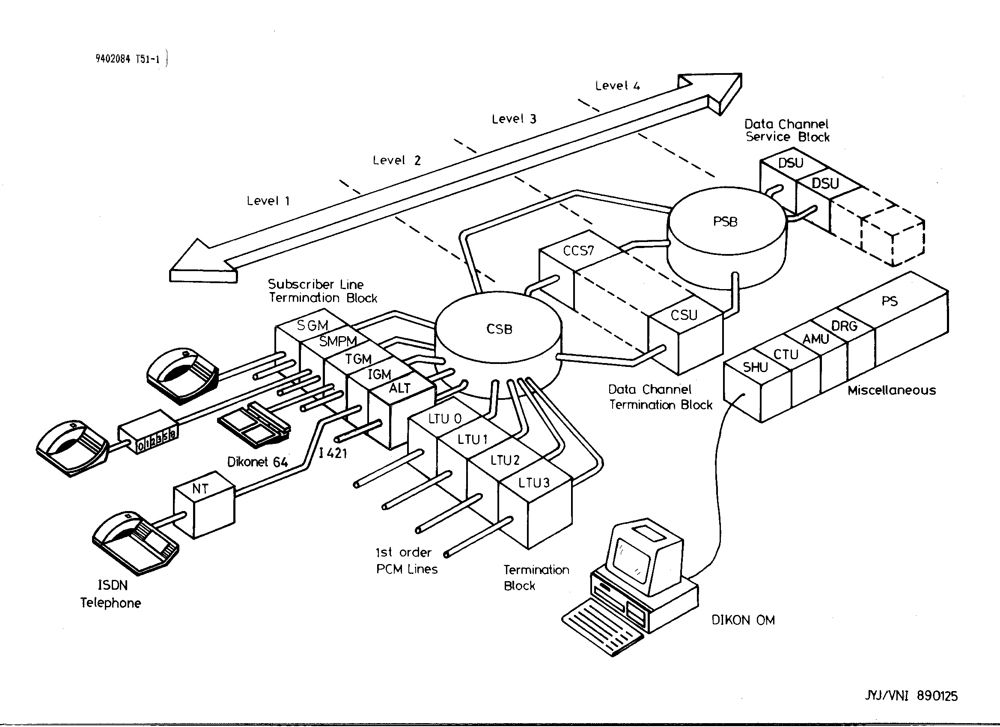
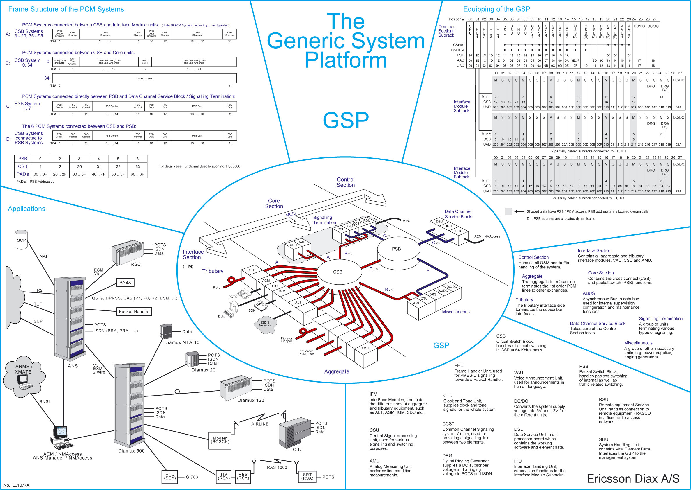

| Forside | Historien | Stamtavle | Ostetegningen | Hvor blev de af? | Småhistorier | Bogen om Diax | Diverse links |
Næsten alle Dikon/Diax produkterne var bygget over en struktur der blev kendt som OST'en (Overordnet System Tegning) -udtænkt af Per Møller Nielsen, JT.
Her ses en af DIKON varianterne:

Her er en OST for en en GSP(Generisk System Platform)-variant:
